stat_*(): Additional statistics for ggplot2
GGally team
May 28, 2020
Source:vignettes/ggally_stats.Rmd
ggally_stats.RmdGGally proposes several additional statistics that could be used with ggplot2. As reminder, a statistic is always used in conjunction with a geometry. You can call a statistic from a geom_*() or call a geometry from a stat_*(). A statistic will compute new variables from the provided data. These new variables could be mapped to an aesthetic using ggplot2::after_stat().
library(GGally, quietly = TRUE)
#> Registered S3 method overwritten by 'GGally':
#> method from
#> +.gg ggplot2
stat_cross()
This statistic is intended to be used with two discrete variables mapped to x and y aesthetics. It will compute several statistics of a cross-tabulated table using broom::tidy.test() and stats::chisq.test(). More precisely, the computed variables are:
- observed: number of observations in x,y
- prop: proportion of total
- row.prop: row proportion
- col.prop: column proportion
- expected: expected count under the null hypothesis
- resid: Pearson’s residual
- std.resid: standardized residual
By default, stat_cross() is using ggplot2::geom_points(). If you can to plot the number of observations, you need to map after_stat(observed) to an aesthetic (here size):
d <- as.data.frame(Titanic)
ggplot(d) +
aes(x = Class, y = Survived, weight = Freq, size = after_stat(observed)) +
stat_cross() +
scale_size_area(max_size = 20)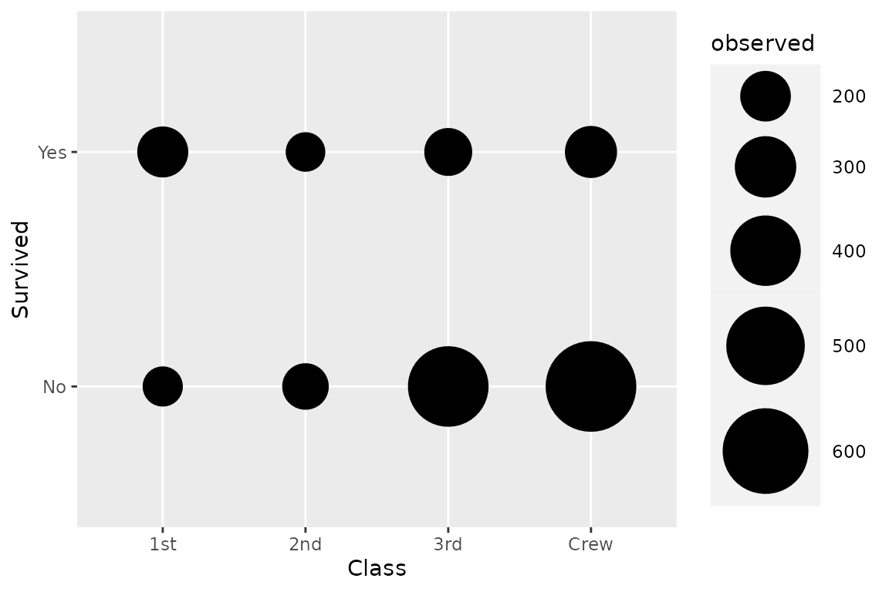
Note that the weight aesthetic is taken into account by stat_cross().
We can go further using a custom shape and filling points with standardized residual to identify visually cells who are over- or underrepresented.
ggplot(d) +
aes(x = Class, y = Survived, weight = Freq, size = after_stat(observed), fill = after_stat(std.resid)) +
stat_cross(shape = 22) +
scale_fill_steps2(breaks = c(-3, -2, 2, 3), show.limits = TRUE) +
scale_size_area(max_size = 20)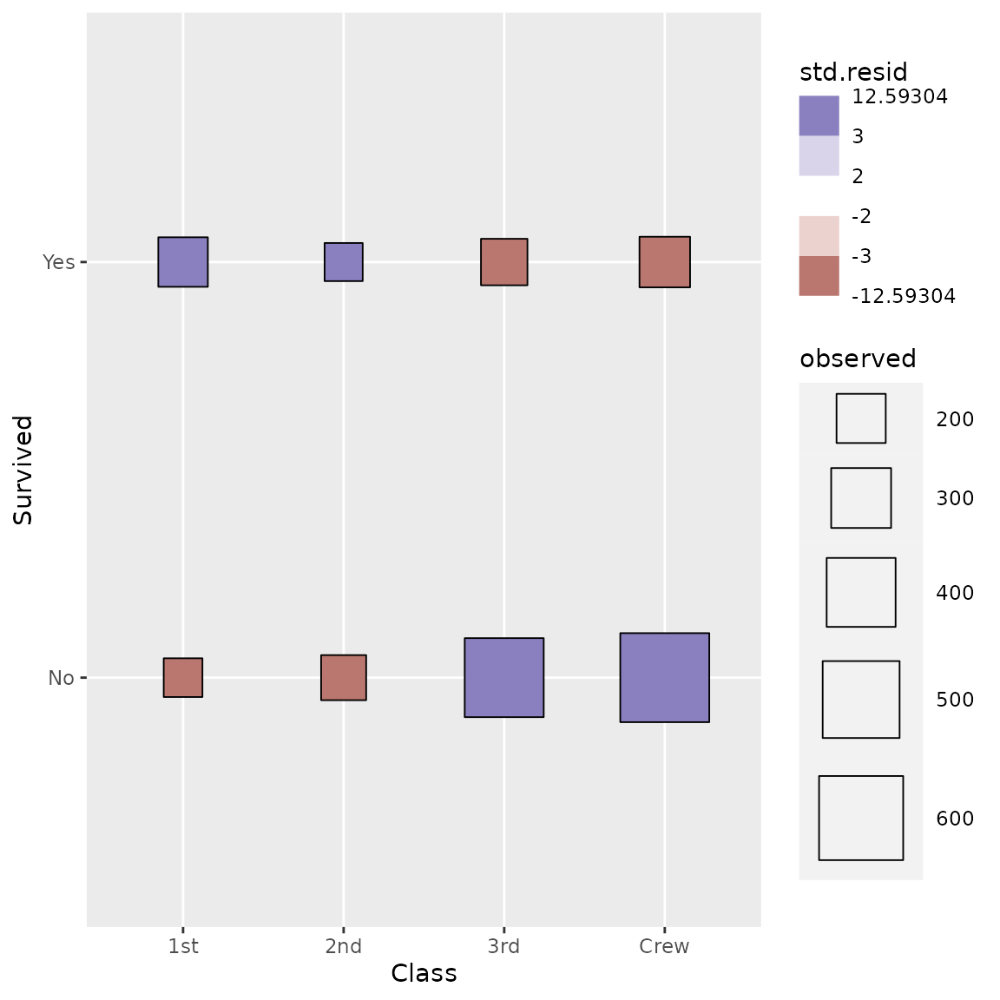
We can easily recreate a cross-tabulated table.
ggplot(d) +
aes(x = Class, y = Survived, weight = Freq) +
geom_tile(fill = "white", colour = "black") +
geom_text(stat = "cross", mapping = aes(label = after_stat(observed))) +
theme_minimal()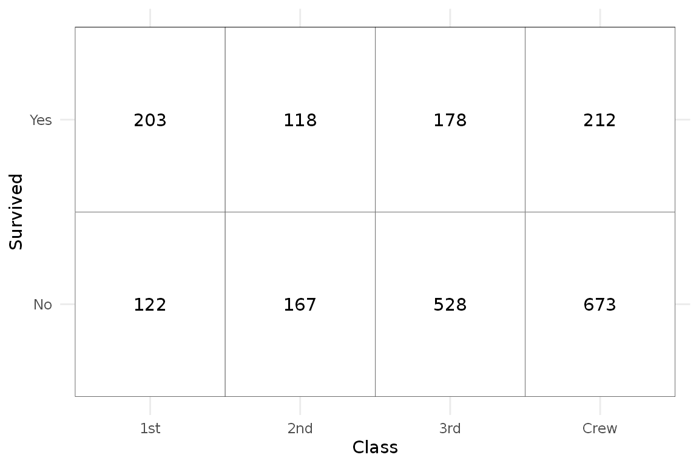
Even more complicated, we want to produce a table showing column proportions and where cells are filled with standardized residuals. Note that stat_cross() could be used with facets. In that case, computation is done separately in each facet.
ggplot(d) +
aes(
x = Class, y = Survived, weight = Freq,
label = scales::percent(after_stat(col.prop), accuracy = .1),
fill = after_stat(std.resid)
) +
stat_cross(shape = 22, size = 30) +
geom_text(stat = "cross") +
scale_fill_steps2(breaks = c(-3, -2, 2, 3), show.limits = TRUE) +
facet_grid(rows = vars(Sex)) +
labs(fill = "Standardized residuals") +
theme_minimal()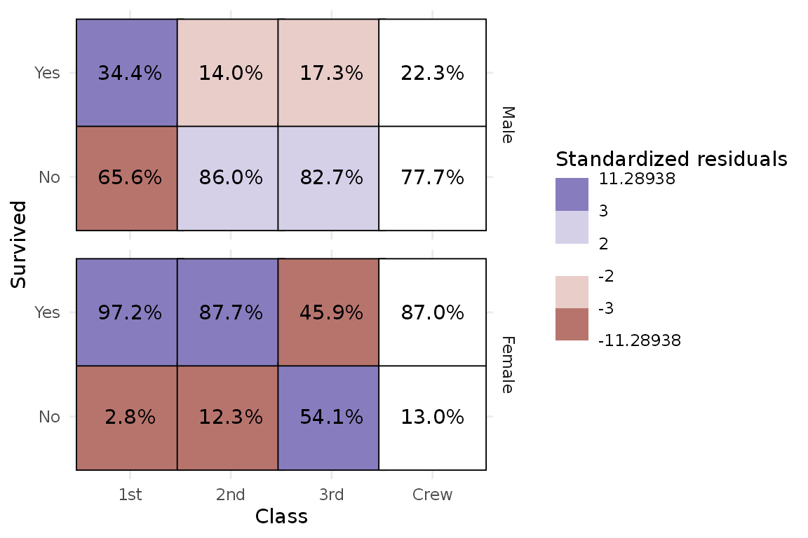
stat_prop()
stat_prop() is a variation of ggplot2::stat_count() allowing to compute custom proportions according to the by aesthetic defining the denominator (i.e. all proportions for a same value of by will sum to 1). The by aesthetic should be a factor. Therefore, stat_prop() requires the by aesthetic and this by aesthetic should be a factor.
adding labels on a percent stacked bar plot
When using position = "fill" with geom_bar(), you can produce a percent stacked bar plot. However, the proportions corresponding to the y axis are not directly accessible using only ggplot2. With stat_prop(), you can easily add them on the plot.
In the following example, we indicated stat = "prop" to ggplot2::geom_text() to use stat_prop(), we defined the by aesthetic (here we want to compute the proportions separately for each value of x), and we also used ggplot2::position_fill() when calling ggplot2::geom_text().
d <- as.data.frame(Titanic)
p <- ggplot(d) +
aes(x = Class, fill = Survived, weight = Freq, by = Class) +
geom_bar(position = "fill") +
geom_text(stat = "prop", position = position_fill(.5))
p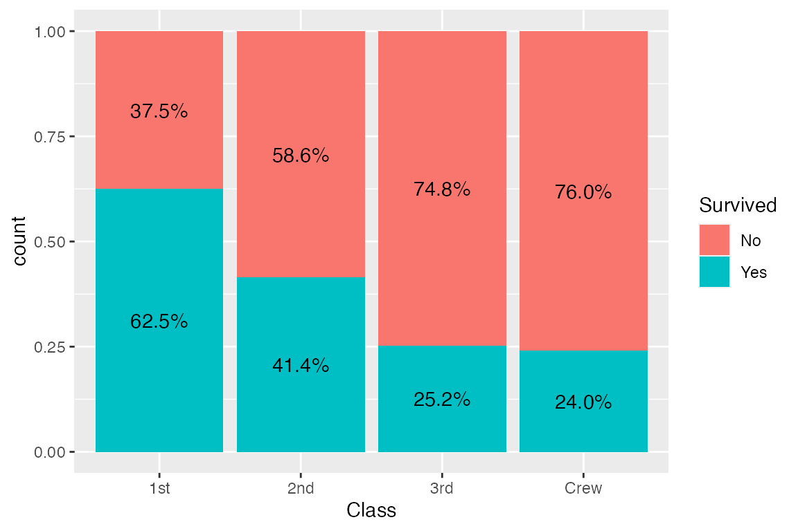
Note that stat_prop() has properly taken into account the weight aesthetic.
stat_prop() is also compatible with faceting. In that case, proportions are computed separately in each facet.
p + facet_grid(cols = vars(Sex))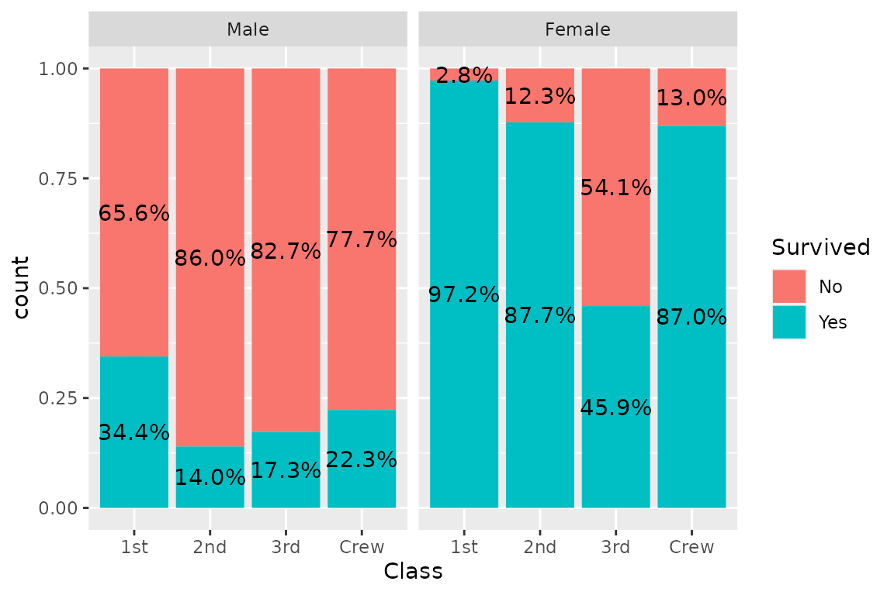
displaying proportions of the total
If you want to display proportions of the total, simply map the by aesthetic to 1. Here an example using a stacked bar chart.
ggplot(d) +
aes(x = Class, fill = Survived, weight = Freq, by = 1) +
geom_bar() +
geom_text(
aes(label = scales::percent(after_stat(prop), accuracy = 1)),
stat = "prop",
position = position_stack(.5)
)
a dodged bar plot to compare two distributions
A dodged bar plot could be used to compare two distributions.
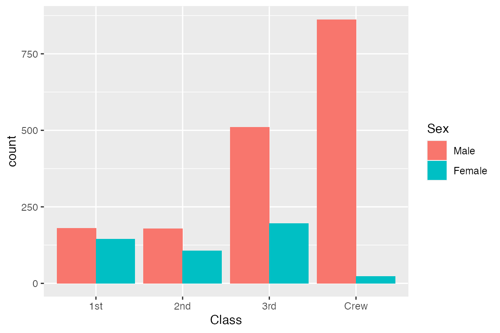
On the previous graph, it is difficult to see if first class is over- or under-represented among women, due to the fact they were much more men on the boat. stat_prop() could be used to adjust the graph by displaying instead the proportion within each category (i.e. here the proportion by sex).
ggplot(d) +
aes(x = Class, fill = Sex, weight = Freq, by = Sex, y = after_stat(prop)) +
geom_bar(stat = "prop", position = "dodge") +
scale_y_continuous(labels = scales::percent)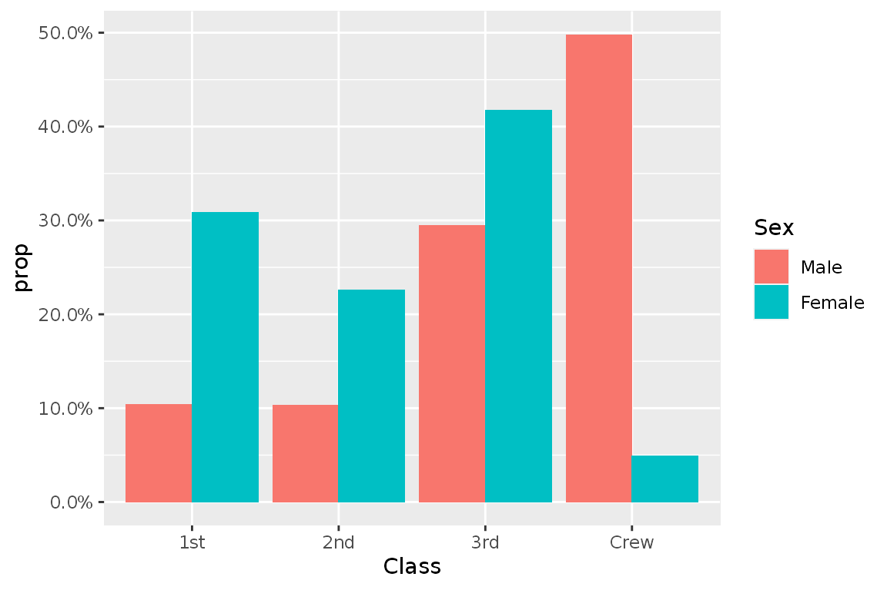
The same example with labels:
ggplot(d) +
aes(x = Class, fill = Sex, weight = Freq, by = Sex, y = after_stat(prop)) +
geom_bar(stat = "prop", position = "dodge") +
scale_y_continuous(labels = scales::percent) +
geom_text(
mapping = aes(
label = scales::percent(after_stat(prop), accuracy = .1),
y = after_stat(0.01)
),
vjust = "bottom",
position = position_dodge(.9),
stat = "prop"
)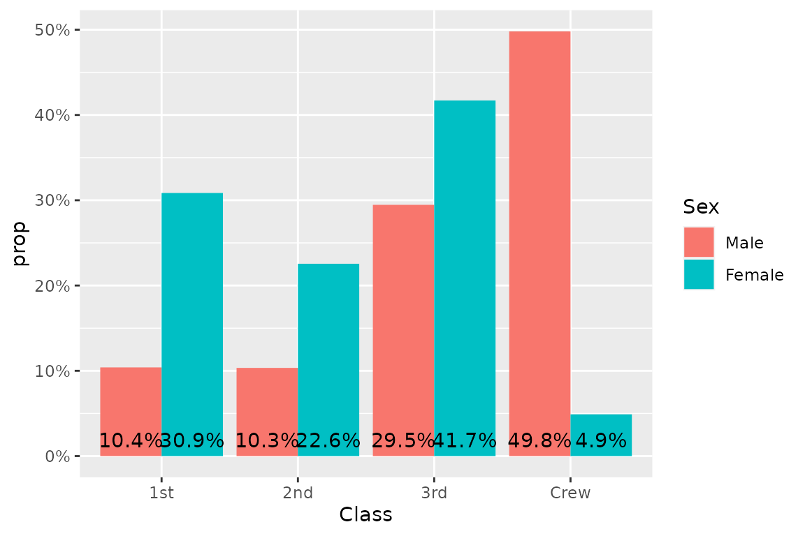
stat_weighted_mean()
stat_weighted_mean() computes mean value of y (taking into account any weight aesthetic if provided) for each value of x. More precisely, it will return a new data frame with one line per unique value of x with the following new variables:
- y: mean value of the original y (i.e. numerator/denominator)
- numerator
- denominator
Let’s take an example. The following plot shows all tips received according to the day of the week.
data(tips, package = "reshape")
ggplot(tips) +
aes(x = day, y = tip) +
geom_point()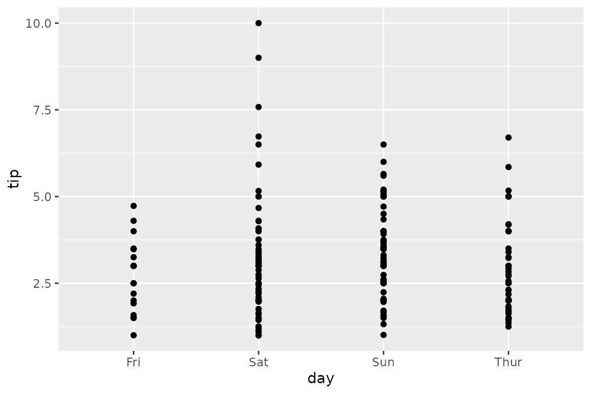
To plot their mean value per day, simply use stat_weighted_mean().
ggplot(tips) +
aes(x = day, y = tip) +
stat_weighted_mean()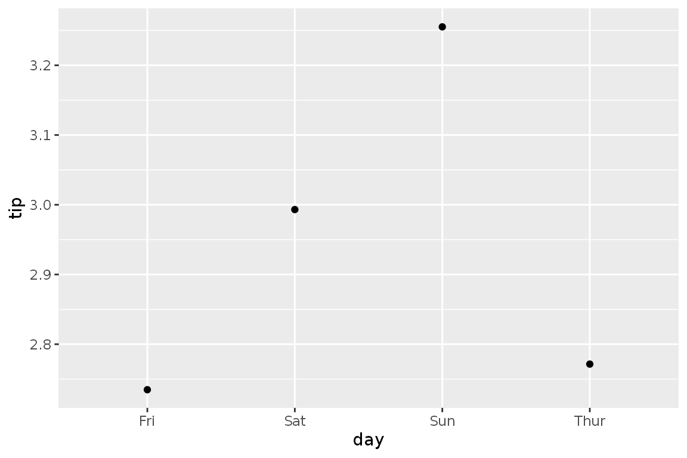
We can specify the geometry we want using geom argument. Note that for lines, we need to specify the group aesthetic as well.
ggplot(tips) +
aes(x = day, y = tip, group = 1) +
stat_weighted_mean(geom = "line")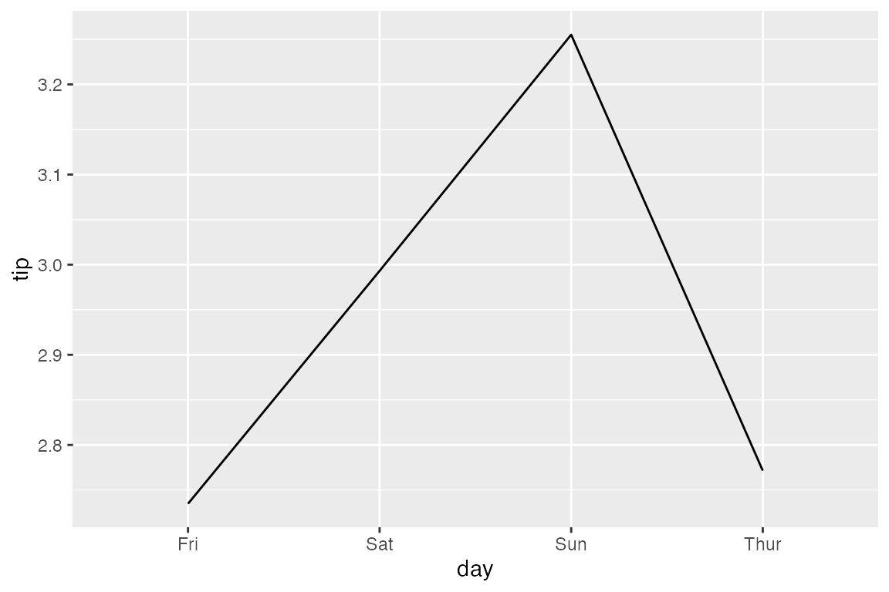
An alternative is to specify the statistic in ggplot2::geom_line().

Of course, it could be use with other geometries. Here a bar plot.
p <- ggplot(tips) +
aes(x = day, y = tip, fill = sex) +
stat_weighted_mean(geom = "bar", position = "dodge") +
ylab("mean tip")
p
It is very easy to add facets. In that case, computation will be done separately for each facet.
p + facet_grid(rows = vars(smoker))
stat_weighted_mean() could be also used for computing proportions as a proportion is technically a mean of binary values (0 or 1).
ggplot(tips) +
aes(x = day, y = as.integer(smoker == "Yes"), fill = sex) +
stat_weighted_mean(geom = "bar", position = "dodge") +
scale_y_continuous(labels = scales::percent) +
ylab("proportion of smoker")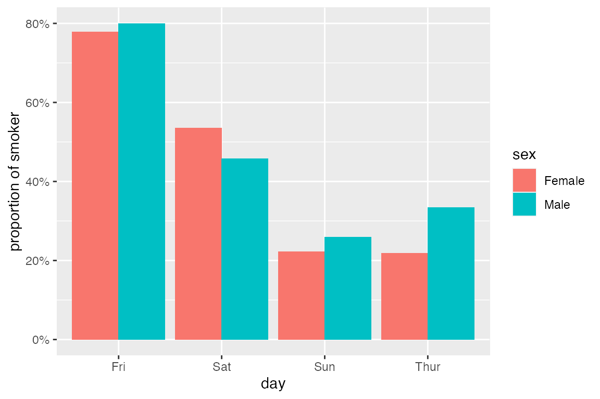
Finally, you can use the weight aesthetic to indicate weights to take into account for computing means / proportions.
d <- as.data.frame(Titanic)
ggplot(d) +
aes(x = Class, y = as.integer(Survived == "Yes"), weight = Freq, fill = Sex) +
geom_bar(stat = "weighted_mean", position = "dodge") +
scale_y_continuous(labels = scales::percent) +
labs(y = "Proportion who survived")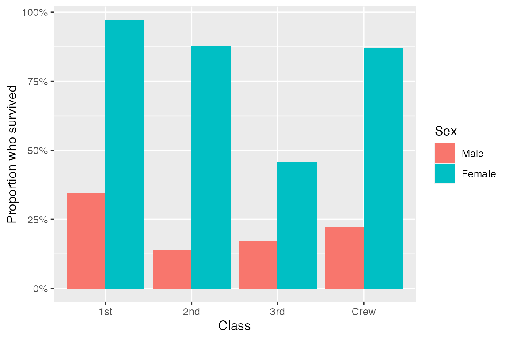